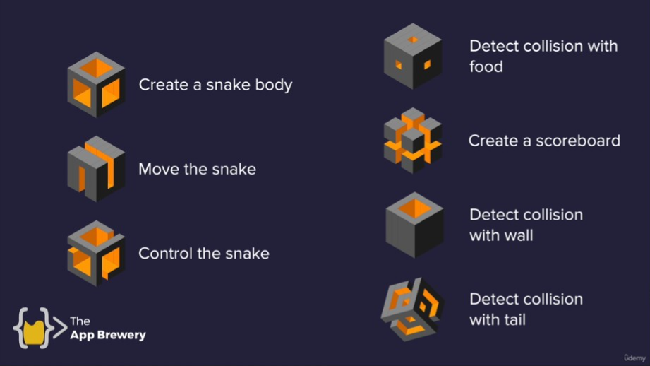

REF
紀錄學習 Udemy-Python-100days of code
Day 20 - Intermediate - Build the Snake Game Part 1: Animation & Coordinates
Day 21 - Intermediate - Build the Snake Game Part 2: Inheritance & List Slicing
這兩天為一個 project, 做出貪吃蛇的遊戲
Function

Turtle Module
Tracer/Update
1
2
3
4
5
6
7
|
import turtle
screen = turtle.Screen()
screen.tracer(0) # 關閉動畫
# 更新蛇的位置
screen.update() # 刷新畫面
|
Snake
移動方式
1
2
3
4
5
6
7
8
9
10
11
12
|
snake_body = [] # 存儲蛇身
while (True):
for seg_num in range(len(snake_body) - 1, 0, -1): # 反向 loop 從尾巴往身體的上一個位置移動
# 獲取一段身體的位置, 達成蛇身依序跟隨頭部的效果
new_x = snake_body[seg_num - 1].xcor()
new_y = snake_body[seg_num - 1].ycor()
snake_body[seg_num].goto(new_x, new_y)
snake_body[0].forward(20) # 移動蛇頭
screen.update()
time.sleep(0.1)
|
檢查身體碰撞
1
2
3
4
|
# 檢查蛇頭與身體其他部分的碰撞
for segment in snake.segments[1:]:
if segment.distance(snake.head) < 10:
game_is_on = False
|
反向 range
range syntax: range(start, stop, step)
一般 range 為正向 => 0, 1, 2, 3, 4(分行輸出)
1
2
|
for i in range(5):
print(i)
|
透過把 step 改為負數, 就可以變成反向倒數
e.g. 5 倒數到 1 => 5, 4, 3, 2, 1
1
2
|
for i in range(5, 0, -1):
print(i)
|
e.g. 最後一個到第一個 => e, d, c, b, a
1
2
3
|
my_list = ["a", "b", "c", "d", "e"]
for i in range(len(my_list) - 1, -1, -1):
print(my_list[i])
|
e.g. 反向跳階 => 9, 7, 5, 3, 1
1
2
|
for i in range(9, 0, -2):
print(i)
|
OOP 繼承(inherit)
Concept
Class Inheritance(類繼承)允許一個 class 繼承另一個 class 的 attribute 和 method
簡單說阿公有的爸爸也有, 爸爸有的兒子也有 但是兒子有的, 爸爸不一定有 遺產繼承的概念
Core feature
- 繼承屬性(Attributes)
- 繼承方法(Methods)
- 可以覆寫或擴展繼承的 method
syntax
1
2
3
4
5
6
7
8
9
10
11
12
13
14
15
16
17
18
19
20
21
22
23
24
|
class ParentClass:
def __init__(self):
print("Parent class constructor")
def parent_method(self):
print("Parent method")
class ChildClass(ParentClass): # ChildClass 继承了 ParentClass
def __init__(self):
super().__init__() # 呼叫父類別的 constructor
print("Child class constructor")
def child_method(self):
print("Child method")
# overwrite 父類別的 method
def parent_method(self):
super().parent_method() # 呼叫父類別的 method
print("Overridden in child class")
child = ChildClass()
child.parent_method() # 调用重写后的方法
child.child_method() # 调用子类的方法
|
Basic
1
2
3
4
5
6
7
8
9
10
11
12
13
14
15
16
17
18
|
# Define Animal class
# Define attribute num_eye = 2
class Animal:
def __init__(self):
self.num_eyes = 2
# Define method breath()
def breathe(self):
print("Inhale, exhale")
# Define Fish class inherir Animal
class Fish(Animal):
def __init__(self):
super().__init__() # 呼叫父類別的constructor, 繼承父類別的 attribute(例如 num_eyes)
# Define method seim()
def swim(self):
print("moving in water")
|
Method overriding and extension
1
2
3
4
5
|
# Define Fish class inherir Animal
class Fish(Animal):
def breathe(self):
super().breathe() # 呼叫父類別的 breathe method, 保持原有的功能
print("doing this underwater") # extend method 增加「在水下進行」功能
|
使用方法
1
2
3
4
5
|
nemo = Fish()
nemo.swim() # output: moving in water
nemo.breathe() # 輸出: Inhale, exhale
# doing this underwater
print(nemo.num_eyes) # output: 2
|
List/Tuple Slice
list slice 可以從 list 中提取特定範圍的內容
syntax:
list[start🔚step]
Basic
1
2
|
piano_keys = ['a', 'b', 'c', 'd', 'e', 'f', 'g']
print(piano_keys[2:5]) # ['c', 'd', 'e']
|
省略 parameter
- 省略 start:
piano_keys[:5] # 從開頭到位置5
- 省略 end:
piano_keys[2:] # 從位置2到結尾
use step
1
2
|
print(piano_keys[2:5:2]) # ['c', 'e']
print(piano_keys[::2]) # ['a', 'c', 'e', 'g']
|
Reverse Slice
1
|
print(piano_keys[::-1]) # ['g', 'f', 'e', 'd', 'c', 'b', 'a']
|
Snake Game
food.py
▶ food.py
1
2
3
4
5
6
7
8
9
10
11
12
13
14
15
16
17
18
|
import turtle
import random
class Food(turtle.Turtle):
def __init__(self) -> None:
super().__init__()
self.shape("circle")
self.penup()
self.shapesize(stretch_len=0.5, stretch_wid=0.5)
self.color("blue")
self.speed(10)
self.refresh()
def refresh(self):
random_xcor = random.randint(-280, 280)
random_ycor = random.randint(-280, 270)
self.goto(random_xcor, random_ycor)
|
scoreboard.py
▶ scoreboard.py
1
2
3
4
5
6
7
8
9
10
11
12
13
14
15
16
17
18
19
20
21
22
23
24
25
26
27
|
import turtle
ALIGNMENT = "center"
FONT = ('Fira Code', 20, 'normal')
class ScoreBoard(turtle.Turtle):
def __init__(self) -> None:
super().__init__()
self.num = 0
self.hideturtle()
self.penup()
self.color("white")
self.goto(0, 270)
self.update_scoreboard()
def update_scoreboard(self):
self.write(f"Score: {self.num}", align=ALIGNMENT, font=FONT)
def game_over(self):
self.goto(0, 0)
self.write("GAME OVER", align=ALIGNMENT, font=FONT)
def plus_score(self):
self.num += 1
self.clear()
self.update_scoreboard()
|
snake.py
▶ snake.py
1
2
3
4
5
6
7
8
9
10
11
12
13
14
15
16
17
18
19
20
21
22
23
24
25
26
27
28
29
30
31
32
33
34
35
36
37
38
39
40
41
42
43
44
45
46
47
48
49
50
51
52
53
54
55
56
57
58
59
60
61
62
63
64
65
66
67
68
69
70
71
72
73
74
75
76
77
|
import turtle
import food
import scoreboard
MOVE_DISTANCE = 20
RIGHT = 0
LEFT = 180
UP = 90
DOWN = 270
food = food.Food()
scoreboard = scoreboard.ScoreBoard()
class Snake:
def __init__(self) -> None:
self.snake_list = []
self.initial_snake()
self.snake_head = self.snake_list[0]
def initial_snake(self):
for i in range(3):
new_snake = turtle.Turtle("square")
new_snake.color("white")
new_snake.penup()
new_snake.goto(0 - i * 20, 0)
self.snake_list.append(new_snake)
def extend(self):
body = turtle.Turtle(shape="square")
body.color("white")
body.penup()
last_position = self.snake_list[-1].position()
body.goto(last_position)
self.snake_list.append(body)
def move(self):
for i in range(len(self.snake_list)-1, 0, -1):
new_x = self.snake_list[i-1].xcor()
new_y = self.snake_list[i-1].ycor()
self.snake_list[i].goto(new_x, new_y)
self.snake_head.fd(MOVE_DISTANCE)
def food_collision(self):
if self.snake_head.distance(food) < 15:
food.refresh()
scoreboard.plus_score()
self.extend()
def wall_collision(self):
if self.snake_head.xcor() > 280 or self.snake_head.xcor() < -280 or self.snake_head.ycor() > 280 or self.snake_head.ycor() < -280:
return True
def body_collision(self):
for segment in self.snake_list[1:]:
if self.snake_head.distance(segment) < 10:
return True
def snake_gameover(self):
scoreboard.game_over()
def up(self):
if self.snake_head.heading() != DOWN:
self.snake_head.setheading(90)
def down(self):
if self.snake_head.heading() != UP:
self.snake_head.setheading(270)
def left(self):
if self.snake_head.heading() != RIGHT:
self.snake_head.setheading(180)
def right(self):
if self.snake_head.heading() != LEFT:
self.snake_head.setheading(0)
|
main.py
1
2
3
4
5
6
7
8
9
10
11
12
13
14
15
16
17
18
19
20
21
22
23
24
25
26
27
28
29
30
31
32
33
34
35
36
37
38
39
40
41
|
import turtle
import time
import snake
screen = turtle.Screen()
screen.setup(width=600, height=600)
screen.bgcolor("black")
screen.title("Snake Game")
screen.tracer(0)
snake = snake.Snake()
screen.listen()
screen.onkey(snake.up, "Up")
screen.onkey(snake.down, "Down")
screen.onkey(snake.left, "Left")
screen.onkey(snake.right, "Right")
while (True):
screen.update()
time.sleep(0.1)
snake.move()
# Detect collision with food.
snake.food_collision()
# Detect collosion with wall.
if snake.wall_collision():
break
# Detext collision with tail.
if snake.body_collision():
break
snake.snake_gameover()
screen.mainloop()
|